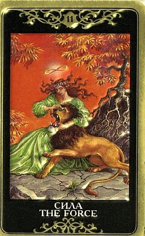

Карта символизирует духовную силу, которая одолевает физическую, укрощает инстинкты.
Сила также показатель равновесия между разумом и инстинктом.
Аркан указывает на способность сопротивления неблагоприятным явлениям жизни.
Аркан указывает также на страсти, драмы, увлеченность, готовность к бою.

Этот Аркан считается позитивным, заключает в себе достаточно большое количество энергии, и призывает отважно и решительно противостоять превратностям судьбы.
Сила возвещает испытание на выносливость и говорит о необходимости терпения и смелости.
Сила в раскладе - свидетельство того, что до сих пор человек шел верным путем, а сейчас ему предстоит испытание умонастроений, проверка.
Это карта внутренней силы, необходимой для преодоления препятствий на пути и для того, чтобы оставаться непоколебимым перед лицом сложных обстоятельств.
Обычно эта необходимость быть сильным во имя других или себя самого подразумевает обуздание собственых чувств, будь то страсть, тоска или разочарование.
Человеку брошен вызов, и малодушие и слабоволие сейчас не к месту!
То, что предстоит пережить, необходимо принять спокойно, терпеливо и не теряя уверенности в себе.
Достижение эмоциональной зрелости сейчас самая важная задача.
Беснуясь или жалея себя, ее не решишь.
Сила часто выпадает тогда, когда человек ощущает, что попал в довольно опасную ситуацию, и ему предстоит, условно говоря, войти в логово льва, вооружившись только своими убеждениями.
Традиционное значение Силы позитивно: преодоление препятствий (при проявленной силе духа), победа над непредвиденными обстоятельствами. Это карта силы воли, энергии, стойкости и триумфа.
Ее функция – дать силу усмирить внешнего или внутреннего врага (например, преодолеть слабости).
В раскладе она обозначает возможность добиться успеха и совет действовать мягко, ненавязчиво и при этом неустрашимо.
Если расклад делается на какую-то кризисную ситуацию, Сила четкое указывает, что у человека есть силы сделать все необходимое и справиться с ней, причем достаточно легко и уверенно.
Главное – он должен ни секунды не сомневаться в своей способности сделать это!
В большинстве случаев карта означает успех и удачу, но с негативными Арканами может и изменить значение.
Карта наглядно показывает, что настоящая Сила - это сила скорее духа, нежели тела.
Речь идет о победе, завоевываемой правотой, внутренней стойкостью, твердой верой в свои ценности, а не мощью. Урок этого Аркана - при истинной внутренней силе необходимость приложения внешней силы минимальна.
Посредством силы убеждений человек может достичь контроля над самыми жесткими ситуациями, не имея никакого оружия, кроме силы воли, морального превосходства, бесстрашия и решимости.
ЛИЧНЫЕ ОТНОШЕНИЯ
Этот Аркан описывает крепкие и жизнеспособные отношения, в которых влечение играет важнейшую роль.
В любви Сила дает нежно укрощающее и одновременно завоевательное влияние.
Кто-то отключает, нейтрализует влияние Анимуса и добирается до беззащитной Анимы в душе (независимо от пола). Один партнер нежностью и лаской постепенно приручает другого, а иногда просто учит его совладанию с собственной природой, в том числе сексуальной, принятию и интеграции энергии страсти и инстинктов.
Карта обычно описывает физически сильного и очень темпераментного партнера, но в какой роли из этих двух он выступает, воспитателя чувств или воспитуемого, неизвестно.
В отношении Силы присутствуют двойственные акценты в интерепретации – «уэйтовские» и «кроулианские». С тех пор, как Алистер Кроули преобразил этот Аркан, часть авторов старательно акцентирует похоть, инстинктивные проявления и животный компонент отношений.
Не то чтобы это значение не работало – Сила действительно указывает на мощную энергетизацию сексуальной сферы, вполне способную удивить своей первобытностью.
Анималистическая природа полового желания при этом становится очевидной.
Но за этим как-то теряется то значение глубокой нежности, мягкости и духовной любви, которое изначально считалось доминирующим в Аркане Силы.
Сила безусловно не принадлежит к группе «платонических» Арканов.
При этом она указывает на неравенство партнеров, явное превосходство одного их них в уровне развития, мудрости, чувств.
В традиции Кроули женщина нисходит до зверя, высвобождая в себе животное начало, в традиции Уэйта она «очеловечивает» его, поднимает его на свой уровень, отчуждая от диких проявлений.
Это карта полной и сознательной самоотдачи в любви, благодаря чему в едином переживании сплавляются в единое целое самые разные и противоречивые аспекты личности.
Сила – весьма обнадеживающая карта в случае каких-то конфликтов и проблем в отношениях. Она символизирует победу любви над ненавистью, человеческих проявлений над нечеловеческими.
Это знак жизнеспособности отношений, относительно которых задавался вопрос, и большой внутренней силы – вопрошающий (или партнер) борется за создание или сохранение отношений, несмотря ни на какие препятствия типа несговорчивой второй половины или злобствующих родственников.
Карта дает также сексуальное рвение, большую силу желания, нешуточное усердие в постели и живые сильные реакции вплоть до крайностей.
Вообще Сила описывает отношения, которым человек отдается со всей страстью, но которые требуют от него большой мудрости.
Женщинам Сила советует умнее вести себя в отношениях с партнером, отвечая на все: “Да, дорогой, конечно”, и делать как надо, не вдаваясь в бесплодные выяснения, кто чего и почему считает правильным.
Мужчинам Сила советует найти такую женщину, которая поможет им стать уверенными в себе. В любом случае потребуется трансформировать какие-то свои слабости (это могут быть и агрессивность, и страхи, и предрассудки) по ходу этих отношений.